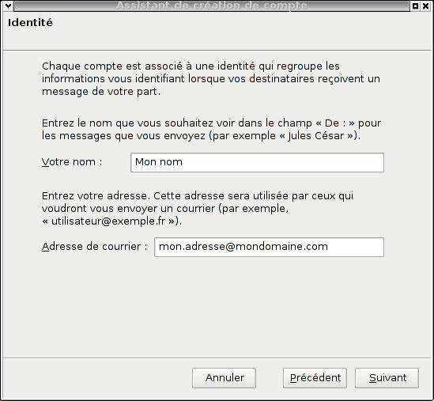
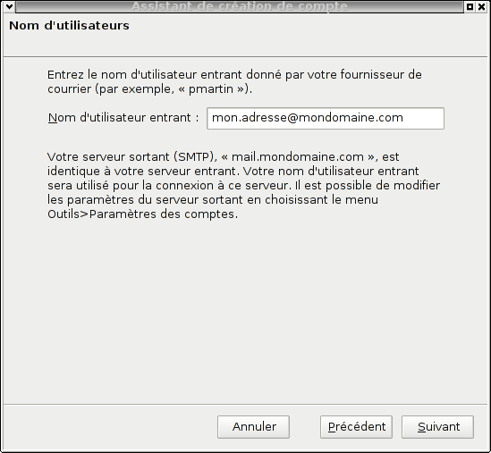
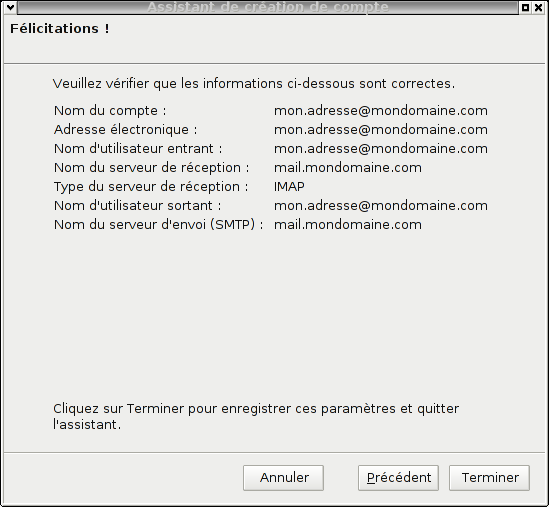
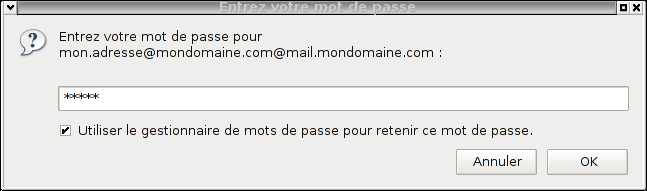
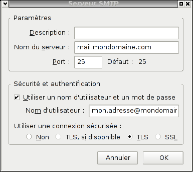

Configuration du client email Thunderbird.Information de base de notre compte d'exemple :
Adresse email : "mon.adresse@mondomaine.com" Configuration de Thunderbird : Nous allons configurer Thunderbird pour pouvoir relever et envoyer des mails avec notre compte mail d'exemple défini ci-dessus. Pour télécharger Mozilla-Thunderbird, vous pouvez aller sur http://www.mozilla-europe.org/fr/products/thunderbird/ Une fois Thunderbird installé et exécuté, une fenêtre de configuration apparaît.
Sélectionnez si besoin "Ne rien importer", puis appuyez sur "Suivant". Une nouvelle fenêtre apparaît :
Sélectionnez "Compte courrier électronique", puis appuyez sur "Suivant". Une nouvelle fenêtre apparaît :  Lorsque l'on compose un email, l'adresse d'envoi se fait sous la forme : "Nom <adresse@email>". Pour passer à l'étape suivante, cliquez sur le bouton "Suivant" situé en bas à droite. Une nouvelle fenêtre apparaît :
Le serveur de réception utilisé est un serveur IMAP, il faut donc sélectionner "IMAP" et lui indiquer son adresse dans le champ "Nom du serveur :" ; soit "mail.bearstech.com". Il faut aussi définir le nom du serveur d'envoi (SMTP) via le champ "Nom du serveur :". Nous mettrons donc "mail.bearstech.com". Pour passer à l'étape suivante, cliquez sur le bouton "Suivant" situé en bas à droite. Une nouvelle fenêtre apparaît :  Pour pouvoir se connecter sur le serveur de réception, il faut s'identifier avec le nom de l'adresse email. Pour pouvoir se connecter sur le serveur d'envoi, tout comme pour le serveur de réception, il faut s'identifier avec le nom de l'adresse email en remplissant le champ "Nom d'utilisateur sortant :" avec "mon.adresse@mondomaine.com". Pour passer à l'étape suivante, cliquez sur le bouton "Suivant" situé en bas à droite. Une nouvelle fenêtre apparaît :
Thunderbird permet de configurer plusieurs adresses emails afin de relever et d'envoyer des courriers électroniques. Pour passer à l'étape suivante, cliquez sur le bouton "Suivant" situé en bas à droite. Une nouvelle fenêtre apparaît :  Il s'agit du récapitulatif de la configuration de l'adresse email. Il faut maintenant affiner cette configuration afin de pouvoir la sécuriser. Pour passer à l'étape suivante, cliquez sur le bouton "Terminer" situé en bas à droite. Une nouvelle fenêtre apparaît :  Une fois la configuration de base terminée, Thunderbird va essayer de se connecter au serveur de réception afin de relever le courrier. Cliquez sur le bouton "OK" situé en bas à droite. Une nouvelle fenêtre apparaît :
Il s'agit d'un rappel à propos de ma gestion des mots de passe.
Cliquez sur le bouton "OK" situé en bas à droite. Fenêtre principale de Thunderbird :
Pour configurer la connexion sécurisée aux serveurs, il faut modifier la configuration du compte actuel. Une nouvelle fenêtre apparaît :
Pour configurer l'accès au serveur d'envoi, cliquez sur "Serveur Sortant (SMTP)" situé tout en bas dans l'arborescence, à gauche de la fenêtre. Puis sélectionnez "mon.adresse@mondomaine.com - mail.bearstech.com" et appuyez sur le bouton "Modifier". Une nouvelle fenêtre apparaît :  Sélectionnez soit "TLS" qui permet de se connecter sur le port classique 25, soit sur "SSL" qui permet de se connecter sur le port sécurisé 465, puis validez en appuyant sur le bouton "OK". Il ne reste plus qu'à configurer l'accès au serveur de réception.
Même cas que pour le serveur d'envoi, deux choix sont possibles pour sécuriser la connexion. Pour finir avec ces configurations basiques, cliquez sur le bouton "OK" situé en bas à droite. Thunderbird est fin prêt et les connexions aux serveurs seront chiffrées. |